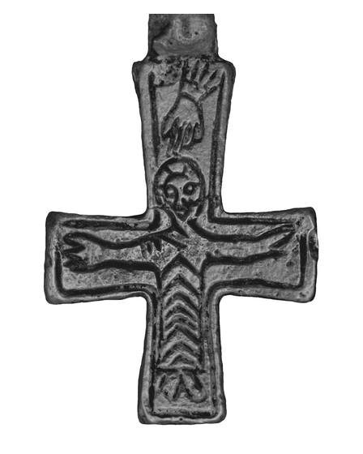
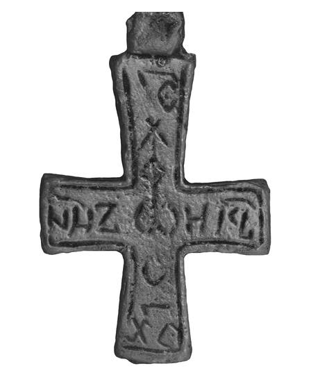

Catalog › CE-0580 · COM2026-83873244
Cruce pectorală-encolpion de plumb, Uherské Hradiště „Sady-Špitálky”
sec. IX (801–900) · Uherské Hradiště, Sady-Špitálky, Cehia · Moravské zemské muzeum
double-sided reliquary cross (enkolpion), plumb; c. IX (801–900); found at Uherské Hradiště, Sady-Špitálky, Cehia; kept at Moravské zemské muzeum.




Identificare
- Categorie
- Encolpion bivalv (relicvar)
- Material
- Plumb
Iconografie
- Descriere avers
- Hristos (descrierea cehă: cruce de plumb cu Hristos și inscripție grecească).
- Descriere revers
- Inscripție grecească.
- Limba
- Greacă
Datare și atribuire
- Datare
- sec. IX (801–900)
Descoperire
- Localitate
- Uherské Hradiště, Sady-Špitálky
- Țară
- Cehia
- Coordonate
- 49.0681° N, 17.4664° E
- Precizia locului
- Doar localitatea
Păstrare și referințe
- Colecție
- Moravské zemské muzeum
- Bibliografie
- Fotografie: Moravské zemské muzeum (via Národní galerie Praha), Wikimedia Commons, licență CC BY-SA 4.0, https://commons.wikimedia.org/?curid=83873244 (accesat 17.10.2026).
- Figura
- Wikimedia Commons, pagina 83873244
- Observații
- Descrierea de pe Commons: „Great Moravian Enkolpion”. Fotografia (expoziția „CM 863”, Galeria Națională Praga) reunește ambele fețe. Coordonate: ale localității (aproximative), nu date în sursă.
Citare: Corpus Encolpiorum, CE-0580, Cruce pectorală-encolpion de plumb, Uherské Hradiště „Sady-Špitálky”, https://vitaliejosanu1979-ux.github.io/primul-meu-proiect/piese/COM2026-83873244/ (accesat 2026-10-17).